Oh Wat Een Nacht
00:00 - 04:00
Je hoort de beste muziek van Radio Veronica non-stop in Oh Wat Een Nacht!

Radio Veronica
00:00 - 04:00
Je hoort de beste muziek van Radio Veronica non-stop in Oh Wat Een Nacht!
Radio Veronica
04:00 - 06:00
Tussen 04:00 en 06:00 uur word je wakker met Lisanne Bronkhorst in The Warming Up.

Lisanne Bronkhorst
06:00 - 09:00
Opstaan met Ekdom in de Morgen betekent opstaan met een lach! Elke werkdag sleurt Gerard Ekdom je mee door de ochtend: van 06:00 tot 09:00 uur.

Gerard Ekdom
09:00 - 12:00
Marisa draait elke werkdag van 09:00 tot 12:00 uur de muziek waar jij van houdt in Goud van Oud!

Marisa Heutink
12:00 - 14:00
De beste playlist tijdens de lunch.

Sander Hoogendoorn
14:00 - 16:00
De Bonanza met Rob Stenders is elke werkdag van 14:00 tot 16:00 uur te horen op Radio Veronica. Jij bepaalt welke muziek er wordt gedraaid. Vraag jouw favoriete platen aan via de gratis Radio Veronica app.

Rob Stenders
16:00 - 19:00
De middagshow van Radio Veronica met Wouter van der Goes en Frank van 't Hof.

Wouter van der Goes & Frank van 't Hof
19:00 - 21:00
Elke maandag t/m donderdag 19:00 - 21:00 uur.

Martijn Muijs
21:00 - 23:59
Sluit je dag af met Frank van der Lende. Met live muziek, goede gesprekken en de fijnste muziek voor de late avond.

Frank van der Lende
00:00 - 06:00
Tijdens SLAM! non-stop hoor je de beste tracks van dit moment non-stop achter elkaar.Of je nu op zoek bent naar de nieuwste dance hits, popnummers of de laatste releases, dit programma zorgt ervoor dat je avond compleet is met geweldige muziek.
SLAM!
00:00 - 06:00
Tijdens SLAM! non-stop hoor je de beste tracks van dit moment non-stop achter elkaar.Of je nu op zoek bent naar de nieuwste dance hits, popnummers of de laatste releases, dit programma zorgt ervoor dat je avond compleet is met geweldige muziek.
SLAM!
06:00 - 07:00
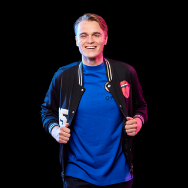07:00 - 10:00
In Early Birds neemt Anoûl Hendriks je van maandag tot en met donderdag tussen 07.00 uur en 10.00 uur mee tijdens de start van je werkdag met een frisse kijk op de wereld, actuele onderwerpen en vooral veel muziek.
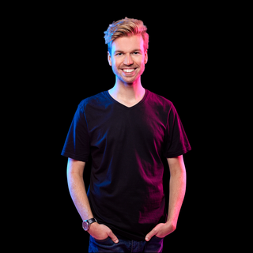Anoûl Hendriks
10:00 - 12:00
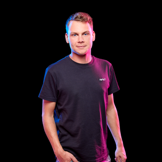Patrick Wolda
12:00 - 14:00
Get ready for the lunch en wees voorbereid op een trip down memory lane, want de playlist gaat alle kanten op. Van clubknallers uit de 00's, naar hiphopbangers uit de 90's, dikke hits van nu, maar ook typische guilty pleasures. Je hoort het allemaal voorbij komen in één mix!
Raoul Schram
14:00 - 16:00
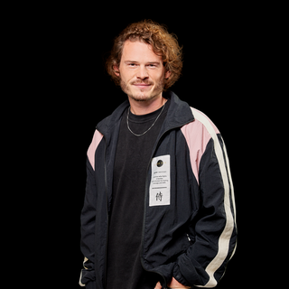Thomas van Empelen
16:00 - 20:00
De SLAM! Middagshow staat voor gezellige chaos. Spannend, onvoorspelbaar, tikkie vreemd, maar wel lachen! Jarno van der Wielen, Erik-Jan Rosendahl en Julia Maan houden je op de hoogte van het laatste nieuws en er komen verschillende toffe gasten langs!
Jarno van der Wielen, Erik-Jan Rosendahl en Julia Maan
20:00 - 23:59
Tijdens SLAM! non-stop hoor je de beste tracks van dit moment non-stop achter elkaar.Of je nu op zoek bent naar de nieuwste dance hits, popnummers of de laatste releases, dit programma zorgt ervoor dat je avond compleet is met geweldige muziek.
SLAM!
00:00 - 06:00
100% NL Non-stop
00:00 - 06:00
100% NL Non-stop
06:00 - 10:00
Giorgio Hokstam
10:00 - 13:00
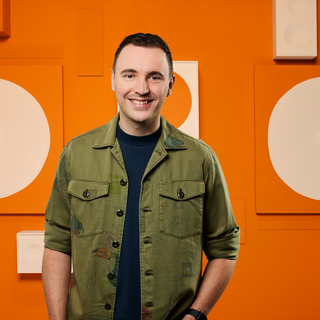Erik van Roekel
13:00 - 16:00
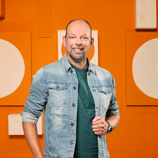Colin Banks
16:00 - 19:00
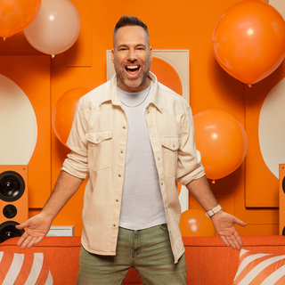Barry Paf
19:00 - 22:00
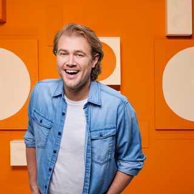Koen Hansen
22:00 - 23:59
100% NL Non-stop
00:00 - 06:00
All night long funk, soul & jazznig
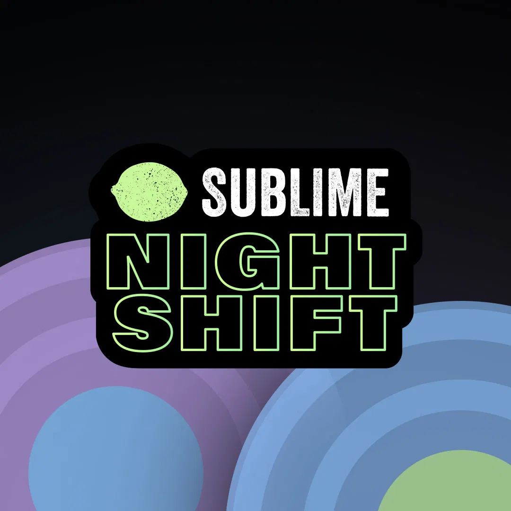Sublime Night Shift
00:00 - 06:00
All night long funk, soul & jazznig
Sublime Night Shift
06:00 - 10:00
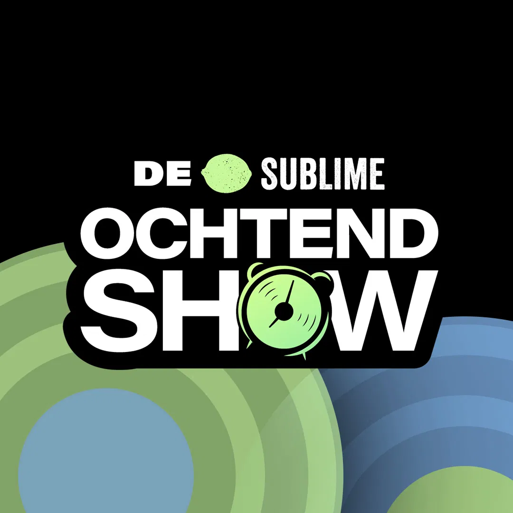Jaap Brienen
10:00 - 18:00
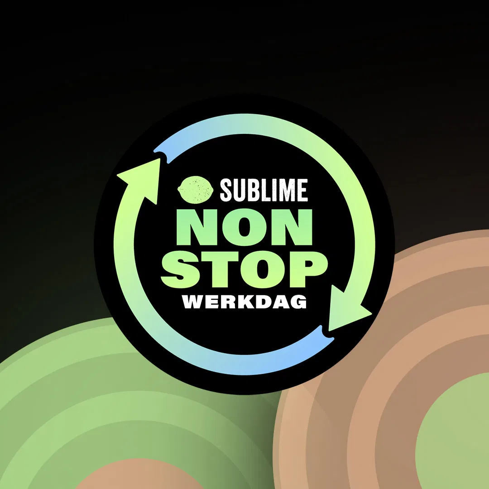10:00 - 18:00
10:00 - 18:00
18:00 - 20:00
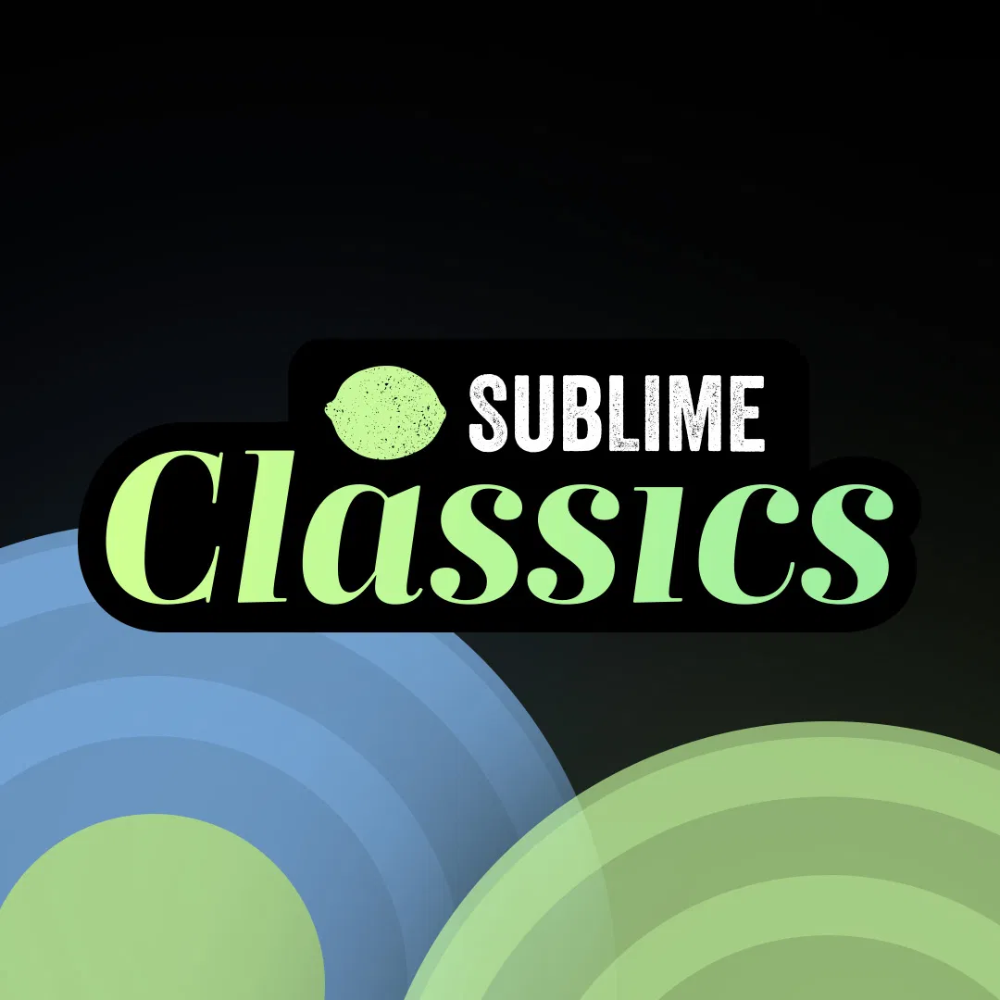20:00 - 22:00
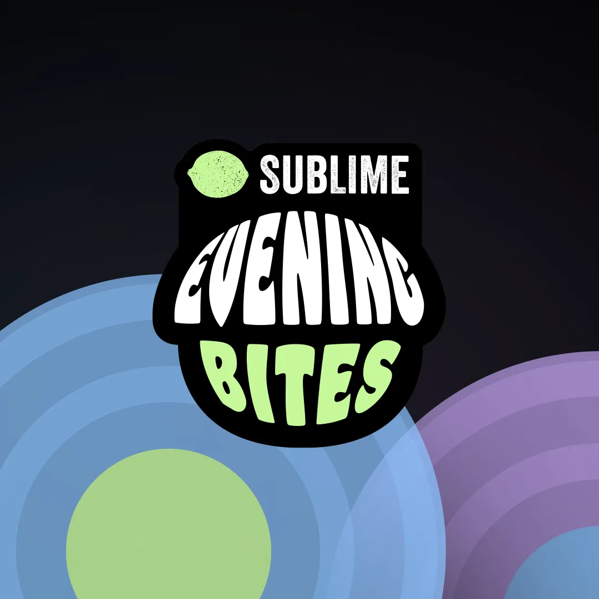22:00 - 23:59
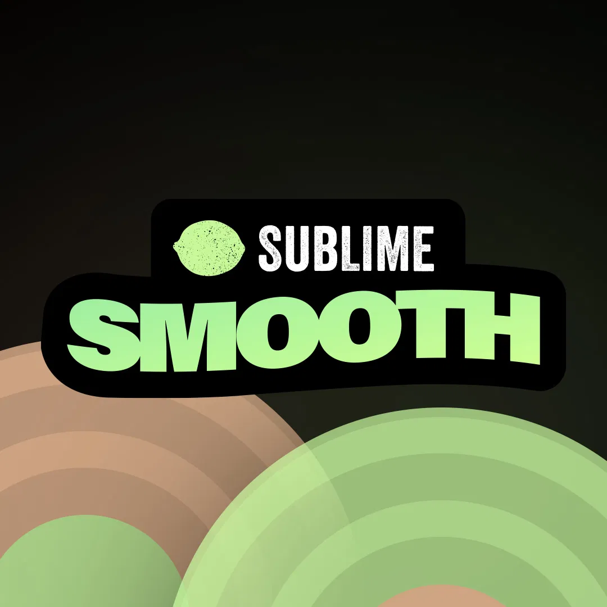 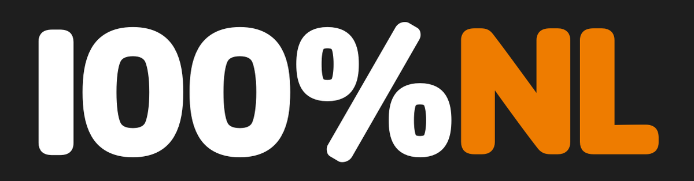
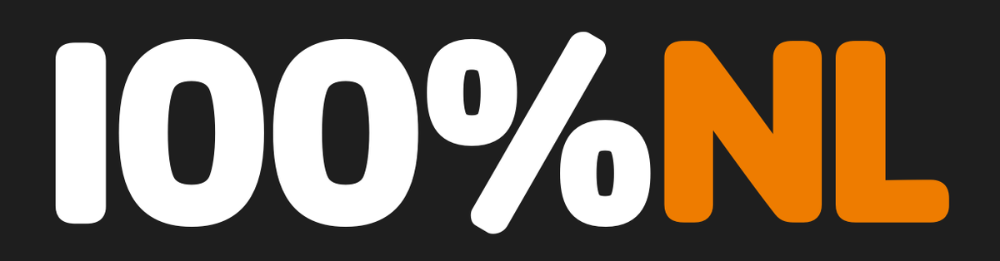